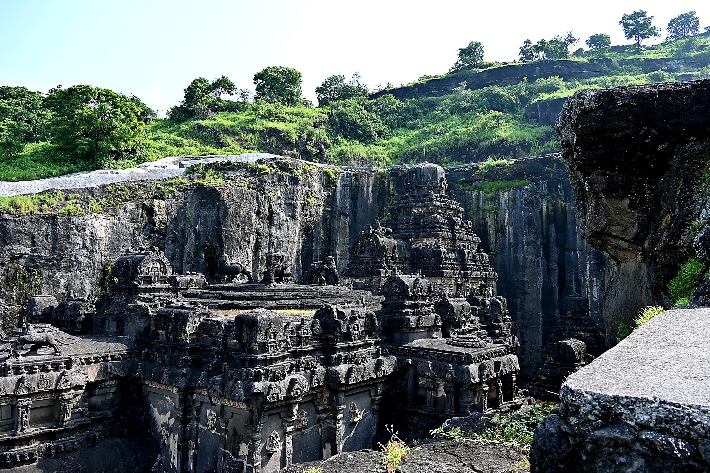
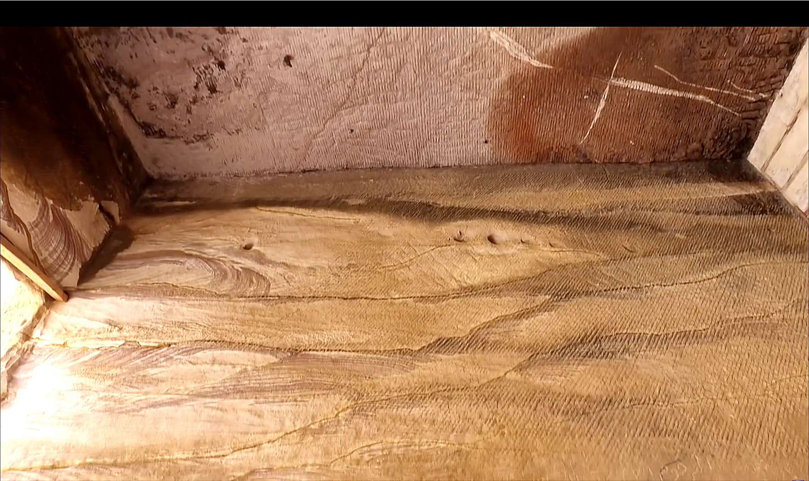
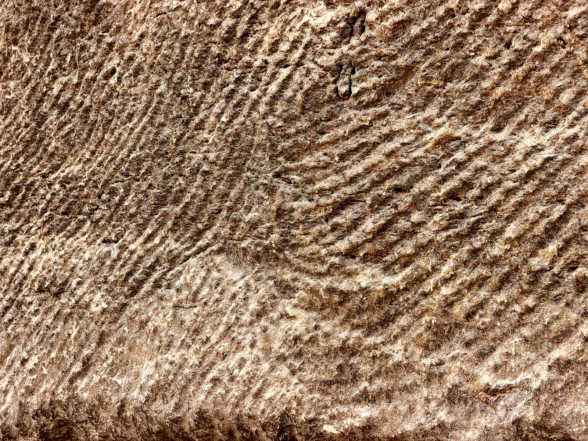
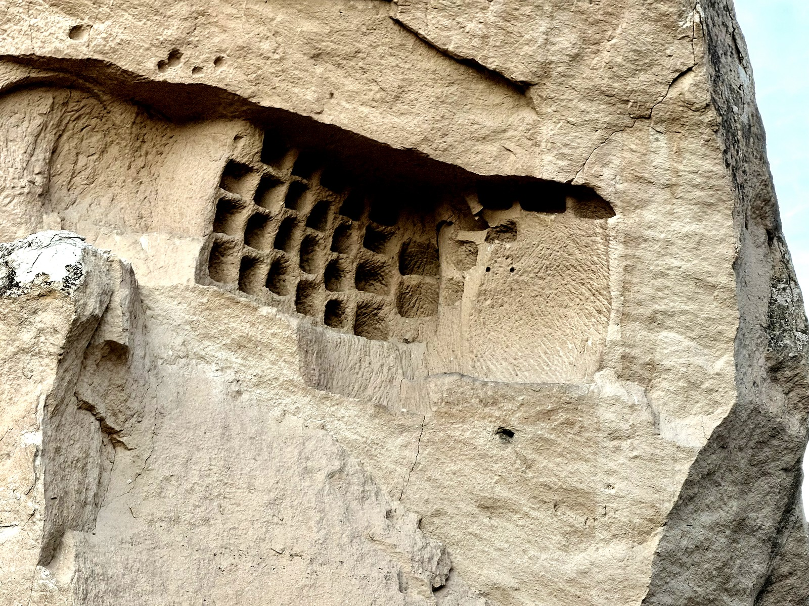
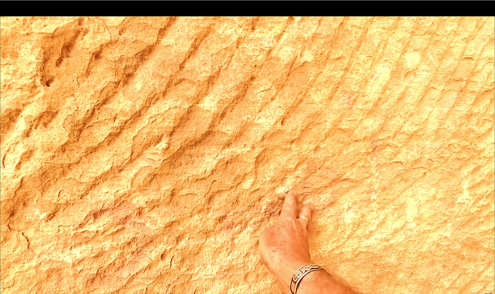
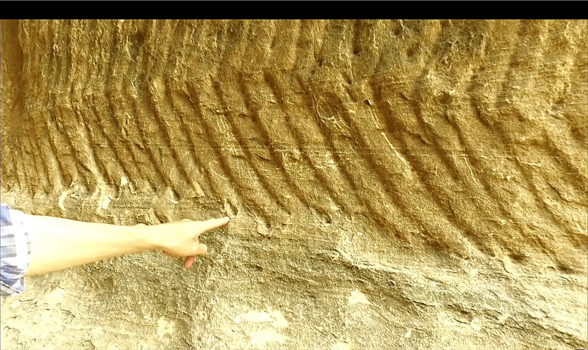

True monoliths.
Cities carved from mountains, and the chisel marks that don't act like chisels.

Most of what humans build is assembly. Bricks, blocks, beams, panels, gathered and fit together. Even the Great Pyramid stacks 2.3 million stones.
A different tradition does the opposite. It removes everything that is not the building.
Lalibela's eleven churches were carved from below ground level, each one a single piece of Ethiopian bedrock with chapels, columns, drainage, and crosses already inside the stone when extraction began. Kailasa Temple removed an estimated 200,000 tonnes of rock from the top down to leave one temple standing. Petra's Treasury and the 131 monumental tombs at Hegra are facades cut directly into sandstone cliffs, with internal chambers hollowed behind them. None of these structures has a seam. None has joinery. None was assembled.
The building is the bedrock.
What a true monolith actually is.
Popular usage treats a monolith as any single large stone. An obelisk. A standing stone. A menhir. The architectural sense is more specific. A true monolith is a structure cut from a single continuous piece of bedrock, with no seams, no joinery, and no internal masonry. The structure and the rock around it were one body before extraction began. After extraction, what is left is the structure.
The distinction matters because the engineering question is completely different. An assembled wall solves the problem of gathering and fitting parts. A monolithic temple solves the problem of subtractive planning : the builder must know the final form before the first cut, because every cut commits. Negative space, once removed, cannot be put back.
Bet Giyorgis · Lalibela
A cross-shaped church carved straight down into red volcanic tuff. The roof of the church sits at the level of the surrounding plateau. The structure descends 12 metres into the rock, with chapels, columns, and arched windows carved out of the negative space around it. Engineering historians and Ethiopian Orthodox tradition both describe the eleven Lalibela churches as carved from above, beginning at the surface and working downward. The drainage channels were part of the original plan, cut into the bedrock before the chapel floors were finished.
Explore on the atlas →Kailasa Temple · Ellora
The single largest known monolithic structure on Earth. Carved from the top down out of a basalt cliff at Ellora, with an estimated 200,000 tonnes of rock removed to leave the central temple, multiple shrines, courtyards, columns, sculptures, and ornamental friezes. Conventional dating places construction in the 8th century CE under the Rashtrakuta dynasty. Independent investigators ask how a continuous top-down extraction at this scale could have been managed within an 18-year window with the assumed toolkit. The temple is finished. There is no margin for mid-course correction.
Explore on the atlas →Hegra · AlUla
131 monumental tomb facades cut directly into the sandstone mountains of AlUla, Saudi Arabia. Most are conventionally dated to the Nabataean period, 1st century BCE through 1st century CE. The unfinished tombs are the most informative: a number show only their upper sections completed, with the lower portions still buried in the cliff face. The work sequence is preserved. The Nabataeans started at the top, with the finished decorative facade already cut, and worked downward through solid rock.
Explore on the atlas →Petra · The Siq, Treasury, Monastery
An entire Nabataean city carved from sandstone. The Treasury and the Monastery are facades cut directly into cliff faces, with chambers hollowed behind them. Interior surfaces show fine work : right angles, polished walls, regular column flutings. The Siq, the kilometre-long entry gorge, is a natural feature, but the rock-cut chambers along its walls and the Treasury at its end are entirely subtractive.
Explore on the atlas →Cappadocia · Selime, Göreme, Derinkuyu
A regional system : surface monasteries cut into volcanic tuff spires, hundreds of cave churches in the Göreme valley, and underneath everything, the underground cities. Derinkuyu's eighteen documented levels were cut downward through bedrock to a depth exceeding 60 metres, with ventilation shafts, stable rooms, kitchens, churches, and rolling-stone doors carved in place. Conventional dating begins in the Phrygian period, but the scale of the lower levels invites the same question the surface monasteries do.
Explore on the atlas →Great Sphinx of Giza
The most famous monolith on Earth. The lion body and human-headed face were carved directly from the Mokattam Formation limestone of the Giza plateau, leaving the surrounding quarry trench visible to this day. The blocks cut from the trench were used to build the Sphinx Temple immediately in front of the statue : the quarry, the sculpture, and the temple are a single subtractive-then-additive project. Conventionally dated to the reign of Khafre, c. 2500 BCE. Robert Schoch and others read the heavy vertical weathering on the body and trench walls as long-term rainfall erosion, which would require a much wetter Saharan climate than Old Kingdom Egypt and pushes the foundation date considerably earlier — possibly into the late Pleistocene. The dating question remains open. What is not in dispute is the technique : the Sphinx is one body of rock, one cut, no joinery.
Explore on the atlas →A note on Giza. Some sites carry both traditions at once. The Giza plateau is best known as additive architecture at scale, but it is also subtractive at scale, and the subtractive scale is not small. Beneath the Great Pyramid itself sits a bedrock chamber that conventional Egyptology calls the Subterranean Chamber : cut down into the rock at the foot of the descending passage, 30 metres below ground level, unfinished, with its floor still showing the toolwork of an extraction that was abandoned mid-cut. Recent muon-tomography surveys by the ScanPyramids project have detected additional substantial voids inside the pyramid that were not part of the documented construction record.
Beyond the pyramid's own substructure, the plateau itself has been hollowed at scale. The Osiris Shaft, beneath the causeway between the Great Pyramid and the Sphinx, descends three levels through solid bedrock, with a sarcophagus chamber cut below the water table on the lowest level. Brien Foerster's full descent walkthrough captures the geometry intact : precision-cut chambers, standing water, sarcophagus niches, and the symmetry of the lower level visible in a way no still photograph conveys. Beyond the documented shaft, field investigators including Andrew Collins, Foerster, and Robert Schoch have proposed a far more extensive tunnel and chamber network running through the bedrock under the entire plateau, with passages reported to run directly beneath the Great Pyramid. The cave system Collins documented in his 2009 fieldwork remains, by his account, largely unexcavated.
The point is not that Giza is monolithic. The point is that the two traditions coexist at the most famous site on Earth, and the subtractive half rarely gets equal attention. A complete account of Giza is a vertical account, not just a surface one.
Subtractive work to finish-grade tolerance.
These are not rough hewings. The interior of Petra's Treasury was finished to a standard that supported polished surfaces and orthogonal geometry. The columns of Bet Giyorgis at Lalibela carry consistent fluting and tapered profiles, all carved in place from the bedrock that surrounded them. The Kailasa Temple has sculpted reliefs of elephants and gods that required the artist to work outward from a final form already imagined in stone that had not yet been removed.
A subtractive process tolerates no error. An assembled wall can swap a flawed block. A monolithic temple cannot. The cutting standard had to be maintained from the first stroke through the last, on bedrock that was being progressively exposed. The planning that preceded the work must have been complete to a level of detail that does not appear in any surviving construction document for any of these sites.
You cannot put the rock back.
Marks that look like chisels but do not act like chisels.

The part of the story that should be the simple part turns out to be the strange part. The marks left on the rock during extraction are the strongest physical evidence the technique left behind. They survive at every site listed above, and they share a signature that crosses continents.
On a wall at Bazda Caves in southeastern Türkiye, horizontal striations cross the rock face. They look like chisel marks at a glance. They are not.
A hand chisel produces
Discrete impact strikes, each separated by a small ridge.
Short, linear strokes that do not curve.
Stop-and-start patterns, with the angle resetting between blows.
A textured surface the eye reads as percussive.
These marks produce
Continuous arcs that sweep across the rock face.
Mid-stroke direction changes within a single groove.
Horizontal raking with a curved trajectory.
Square grooves arranged in vertical formation, like gear tracks.
The same family of marks appears at Longyou Caves in Zhejiang, China, 7,700 kilometres east of Bazda. At Kotukal Cave Temple in Tamil Nadu. At San Andrea Priù in central Sardinia. At the Serapeum of Saqqara in Egypt. On the trough walls around the unfinished obelisk at Aswan. On individual block faces at Sacsayhuamán. On Sage Wall in Montana.
Different rocks. Different climates. No documented contact between the builders. The marks are the same.
Schematic. Hand chiseling leaves discrete percussive impacts in short, linear strokes. The marks on the cave walls at Bazda, the trough at Aswan, and dozens of other rock-cut sites are continuous curved arcs that sweep across the face in a single motion. A hand chisel cannot do that, no matter how skilled the hand.
Field photographs · the same family of marks at four sites




Three countries. Three rock types. One family of marks. The diagnostic is in the motion, not the geology.
The diagnostic does not depend on technology mysticism. It is a kinematic comparison. A motion that produces a continuous curved groove with a mid-stroke direction change is not the same motion that produces a discrete percussive strike. One requires a rotary or oscillating tool with a sweep arc. The other is a hammer and a wedge.
Whatever the toolkit was, it is not the toolkit the period's archaeology assigns to it.
Abandoned work is the X-ray of the technique.
The strongest evidence for the extractive tradition is the work that was never finished. Abandoned sites preserve the work sequence in a way that completed sites cannot. They show what the builders saw at each stage. They show how the precision was maintained. They show where the toolkit reached its limit.
The Aswan unfinished obelisk
A single piece of red granite, 42 metres long, estimated mass 1,168 tonnes, partially extracted from the bedrock at the Aswan quarry. If completed, it would have been the largest obelisk ever raised. A crack in the stone caused the project to be abandoned. The obelisk remains in place, still attached to its quarry trough on its lower side.
The trough walls are the evidence. They show the same horizontal raking marks that appear at Bazda, Longyou, and the Serapeum. They show that the extraction was working with a precision sweep along the long axis of the obelisk. The granite is Mohs 6.5. The trough walls show no impact craters, no chisel-tip stippling. They are smooth, with curved striations along the cut direction.
Explore on the atlas →Yangshan Quarry
A Ming-dynasty stele project near Nanjing, abandoned in 1405 CE. Three pieces totalling approximately 30,000 tonnes were cut from the hillside : a base of 16,000 tonnes, a shaft of 8,800 tonnes, a crowning head of 6,000 tonnes. The pieces are dressed and shaped. They were never moved. With documented early-modern industrial capacity, the Ming engineers could not transport their own work, and the stele was left in the quarry where it had been cut.
Yangshan is the rare case where conventional dating is firm. The Ming records explicitly document the project. The value to the atlas is comparative : the site shows what cutting megaliths of this scale actually entails, even with the resources of a mature dynastic state, and it preserves the cutting technique on the in-situ surfaces.
Explore on the atlas →Hegra · the half-cut tombs
Several tombs at Hegra preserve their work sequence directly. The upper portions of the facades are complete : decorative cornices, lintels, surface dressing all in place. The lower portions remain unexcavated, with the bedrock still attached to the wall below the completed work. The builders began at the top of the cliff face with the finished decoration already cut, then worked downward through solid rock toward the floor of the tomb chamber.
This is the opposite of how a stone quarry operates. A quarry removes blocks from an exposed edge. Hegra's tombs were cut downward into solid bedrock, starting with the most decorated and finished feature of the structure. The implication is that the builders held the complete final design in mind, and in plan, before the first cut was made.
Explore on the atlas →A finished facade cannot precede the chamber it fronts, unless the planning is complete.
Why the same marks at sites with no documented contact.
The atlas treats this as the open question. The marks are the same. The sites are not. They span four continents and several millennia, and the conventional cultural chronologies that link some of them to medieval or classical periods do not explain how the underlying tool-mark signature predates and persists through those cultural layers.
Three readings are available, and each carries weight.
Reading one : independent convergence. Different cultures, encountering similar problems with similar rocks, developed similar tools that left similar marks. The diagnostic is that the marks are kinematically identical and that the resulting motions are not within the documented capability of the assumed toolkits. The independent-convergence reading requires multiple cultures to independently invent the same anomalous toolkit and to not document it.
Reading two : cultural transmission. A shared technical tradition spread across continents, either through direct contact that has not survived in the historical record, or through inheritance from a common predecessor culture. The Egyptian, Indian, Chinese, and South American traditions of polygonal masonry and rock-cut architecture share features that the conventional cultural timelines treat as coincidental.
Reading three : older substrate. The marks predate the cultural layers that built into the sites. The Nabataeans, the Buddhist monks at Longyou, the Tamil temple builders, the Ming engineers, all worked into rock-cut surfaces that already carried the signature. The cultural-period work is finishing, decoration, and consecration applied to older subtractive substrates.
The atlas does not assign weight to any single reading. It documents the signal and asks the visitor to look at the marks themselves. The diagnostic is in the rock, not in the literature.
What to look for the next time you visit a rock-cut site.
The marks are easy to miss because the eye reads them as old chisel work. The diagnostic is in the motion pattern, not the texture.
The marks survive eyes that look for stones. They are the fingerprint of the toolkit the builders used, and they are still on the rock.
If the chisel marks aren't chisel marks, the question is open.
Sources & Further Reading
- Bernie Ong, Ageless Rock (YouTube). Direct field walkthrough at Bazda Caves with explicit cross-reference to Longyou Caves, Kotukal Cave Temple, San Andrea Priù. The kinematic-comparison framing in this entry tracks Ong's analysis.
- Hugh Newman, Megalithomania (YouTube). Multi-year field documentation of Hegra, Petra, Qasr el Sagha, and the Taş Tepeler complex. The top-down work-order argument for Hegra in this entry follows Newman's photo sequencing of the unfinished tombs.
- Brien Foerster, Hidden Inca Tours. Decades of fieldwork on Sacsayhuamán, the Serapeum, and Aswan. The Aswan obelisk trough analysis in this entry references Foerster's surface documentation.
- Brien Foerster, Under Giza : Fully Exploring The Osiris Shaft In Egypt (YouTube). Full descent walkthrough of all three levels of the Osiris Shaft, with on-camera documentation of the sarcophagus chamber, the standing water at the water-table level, and the symmetry of the lower-level architecture. The primary visual reference for the Giza note in §01.
- Andrew Collins, Beneath the Pyramids : Egypt's Greatest Secret Uncovered (2009). Documentation of the cave system and tunnel network beneath the Giza plateau, with proposed passages running directly under the Great Pyramid.
- Christopher Dunn, Lost Technologies of Ancient Egypt (2010). Engineering-trained analysis of Aswan, the Serapeum boxes, and the granite work at Giza. The kinematic standard applied in §03 is the same one Dunn applies to lathe-cut interior surfaces in Egypt.
- Universe Inside You (YouTube). Field documentation at Lalibela, Longyou Caves, Kailasa, and the Cappadocian underground cities. The drainage-and-extraction sequence at Bet Giyorgis in §01 follows this channel's walkthrough.
- UNESCO World Heritage : Rock-Hewn Churches of Lalibela. Official documentation of the eleven monolithic churches and their conventional dating.
- UNESCO World Heritage : Ellora Caves. Official documentation of Kailasa Temple within the broader Ellora complex.
- Robert Bauval and Graham Hancock, Keeper of Genesis (1996). Long-form synthesis of the Egyptian rock-cut tradition. Source for the broader framing of subtractive Egypt in §01.
— look at the marks the next time you stand inside a cave temple. they were left for you.